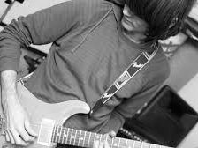

Musical Works
My work as a composer and multimedia artist spans solo performances, chamber music, electroacoustic composition, sound installations, and music for short films. Through live electronics, augmented instruments, and immersive environments, I explore the relationship between gesture, space, sound, and perception.
Live & Stage
Composition & Media
Artistic Vision
Integrating acoustic instruments with real-time electronic processing, my work explores the boundaries between written notation and algorithmic improvisation.